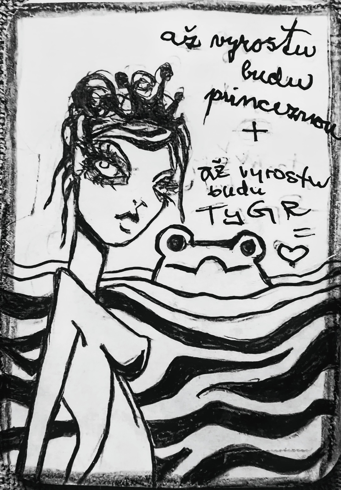

Týmové dysfunkce · Karta Tygr
„až vyrostu budu princeznou + až vyrostu budu TYGR = ❤️"
Fenomén Tygra — konflikt mezi systémovými očekáváními (tradice, pravidla, "tak se to dělá") a individuální autenticitou (přání, podstata, "co chci být"). Tým pracuje podle zastaralých skriptů a potlačuje inovativní, ale nezařaditelné nápady.
Proč žába nechtěla být princem, ale tygrem? Co to vypovídá o systému, ve kterém žila?
Kde ve vašem pracovním prostředí se objevuje tento vzorec: 'Takhle se to neděje. Tak se to neříká?'
Co by se muselo stát, aby se váš tým mohl stát 'tím, kdo líbá tygry' místo 'tím, kdo čeká na prince'?